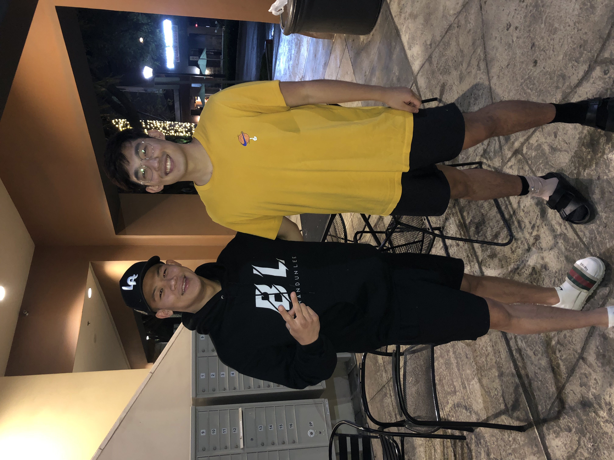
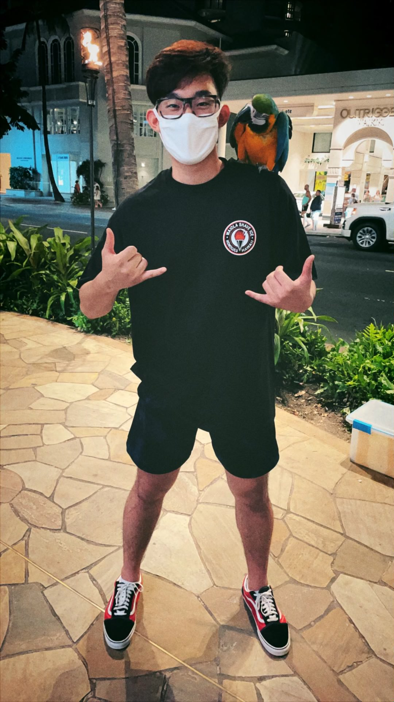
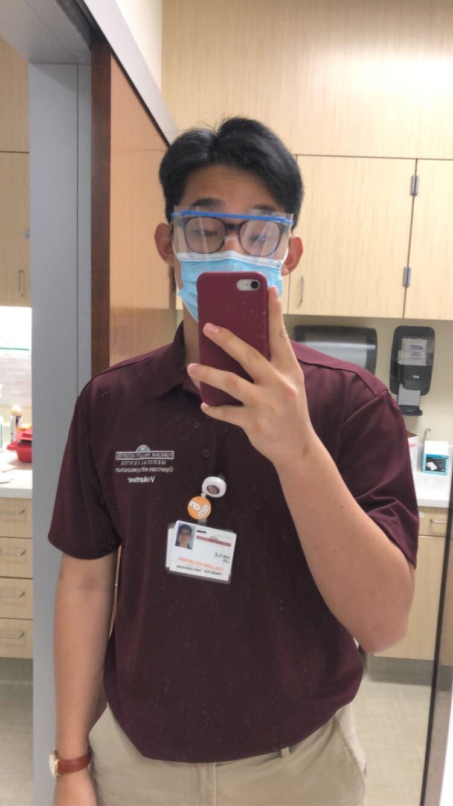
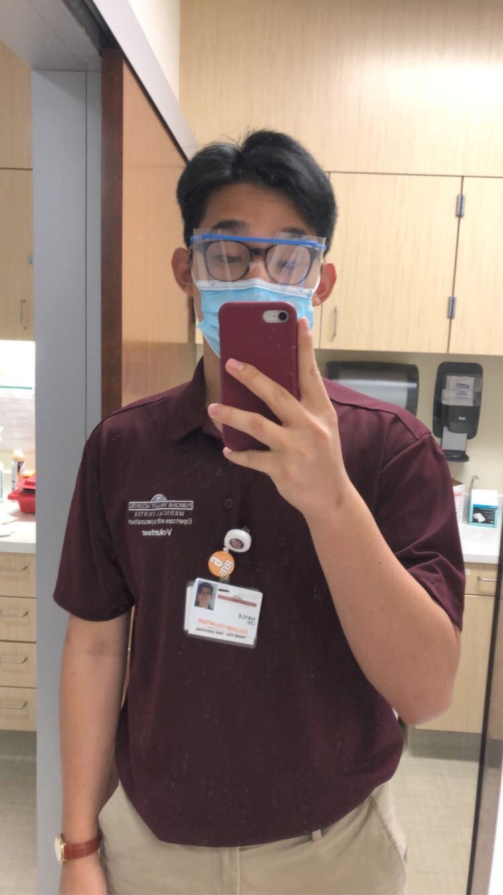

Hayle Lee
Hi my name is Hayle Lee. Born in May of 2000, I graduated high school in 2018 and I am currently on course to graduate University of California Riverside. Despite my major as a psychologist, I am presently interested in pursuing the health field, especially for physical therapy. Physical therapy is used for the purpose of alleviating pain or discomfort in the way of living for any age, and can even improve the longevity of their lifespans. From a starting foundation of walking as babies to the painstaking walking for the elderly, physical therapists make sure the patients can have the right treatment and exercise in order to have a pleasant order and peace throughout the day. I have volunteered at many hospitals in the outpatient section, experiencing the work that physical therapists do and helping out the staff there. THe opportunity to see how the process is to analyze different patient's medical history and evaluating the right pain relief and joint friction reduction are some of the little things physical therapists can do in their field. Surprisingly, my major as a psychologist can benefit in this field in order to gauge the patient's mindset as well as strategies to support their journeys of readjustments in their physiological lives. Clocking at over 300 hours, I am confident to say that Physical Therapy is the field of work that I aspire to work for! Although the process for applications and interviews for Physical Therapy schools may be long, I sincerely believe that I can take the time to better myself and get into a physical therapy school!
In my spare time, I enjoy a myriad of different sports ranging from basketball to surfing. Basketball is a new sport learned from my friends in college and I am currently the intramural captain for my basketball team. Besides sports, I work as a grant writer for a non-profit organization called Korean American Youth Performing Artists. As one of the original youths that performed in the team, I learned about the organization as a student and went my way up along the way, learning what I can and teaching what I have learned. Over time, I gained knowledge of its foundations and its curriculum enough to be able to find the right funding and support for the organization in gratitude for the education and camaraderie during my time as a youth.
Currently, I find it hard to understand physical therapy due to its complex lingo and the barrier of education that stems from the lack of admission to physical therapy school as of yet, but some of the prerequisite classes such as anatomy and abnormal psychology helps a lot to clear up some of the processes and reasonings of certain procedures in hospital settings.
Experience
Grant Writer
• Created meetings to propose projects to the board
• Wrote statements and maintained the image of the non-profit organization
• Experience with Profiles, Grant applications, and Speaking
Head Server/Kitchen Aide
• Responsible for checking out customers
• Serving food and social atmosphere to be comfortable to all
College Volunteer at PVHMC
• Made sanitary standards up to code
• Reviewed and screened patients to the most comfort and safety
• Experienced and shadowed alongside physical therapists
• Volunteered for over 2 years at over 300 hours
Education
UC Riverside
Portfolio




